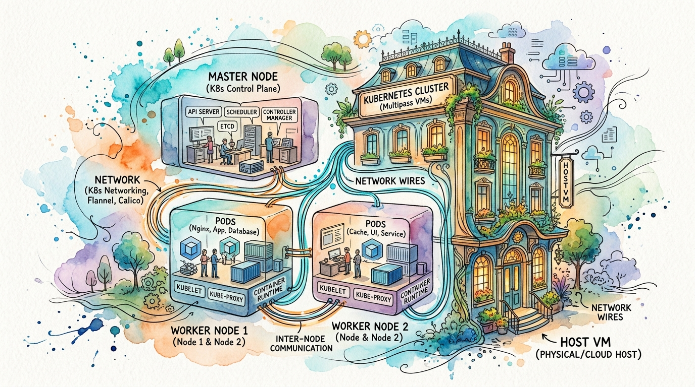

Applications deploy karne se pehle, humein foundation banani hogi: ek mukammal Kubernetes cluster. Is module mein hum scratch se environment setup karna seekhenge.

Analogy: Host VM = Ek bari building. Multipass = Building ke andar chote flats (VMs) banane wala tool. Har flat = Ek Kubernetes node. Kubeadm = Woh wiring jo in tamam flats ko aapas mein connect karke ek system banati hai.
Hum Kya Seekhenge (Concepts)
- Nested Virtualization: Apni Azure Host VM ke andar mazeed Virtual Machines (VMs) run karna.
- Multipass: Ubuntu instances ko jaldi se spin up karne ke liye Canonical ka ek lightweight VM manager.
- Kubeadm: Cluster (control-plane aur workers) ko bootstrap karne ke liye Kubernetes ka official tool.
- CNI (Container Network Interface): Networking plugin (jaise Flannel) jo pods ko mukhtalif nodes ke darmiyan baat cheet karne ki ijazat deta hai.
Hands-on Steps
- Azure VM par nested virtualization check karein (
ls -la /dev/kvm) aur Multipass install karein. - 3 Ubuntu VMs launch karein: 1
masternode (control plane) aur 2workernodes. - Tamam nodes ko prepare karein: swap disable karein, networking modules (
br_netfilter,overlay) load karein, aur container runtime (containerd) install karein. - Kubernetes components install karein:
kubelet,kubeadm, aurkubectl. - Master node par
kubeadm inituse karke cluster initialize karein aur specific Pod network CIDR set karein. - Pod networking ke liye Flannel CNI plugin apply karein.
- Dono worker nodes ko kubeadm join token ke zariye cluster se connect karein.
- Cluster ki health
kubectl get nodes -o widese verify karein.
Errors (Jo hum break karke fix karenge)
Hum jaan boojh kar in issues ko create aur fix karenge:
- CIDR clash: Pods ke liye ghalat IP range use karna.
- Cgroup mismatch: containerd ki ghalat configuration ki wajah se nodes ka
NotReadystate mein phans jana. - Swap failure: Swap memory disable na hone ki wajah se Kubelet ka start hone se inkar karna.
Best Practices
- Hamesha Kubernetes ka exact version (jaise
v1.35) pin karein aurapt-mark holduse karein taake achanak upgrade na ho jaye. - Node roles ko separate rakhein (Control Plane vs Workers).
- Koi bhi destructive experiment karne se pehle apni working state ka snapshot lein (maslan Multipass VMs ko stop/clone karna).
Done-Check
Yeh module tab complete hoga jab aapke 3 nodes Ready status mein honge, aur ek test Nginx pod run kar raha hoga jo Service ke zariye reachable ho.